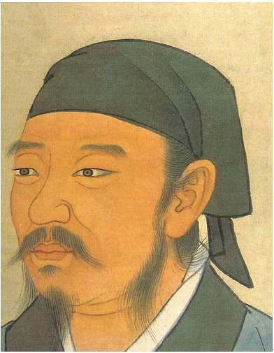

Who Was Xunzi? The Chinese Confucian Philosopher
Xunzi (荀子), also known as Xun Kuang, was an influential Chinese philosopher who lived during the Warring States period, traditionally dated to the third century BCE. He regarded himself as a follower of Confucius and became one of the most important early thinkers in the development of Confucian philosophy.
Xunzi is especially famous for his distinctive theory of human nature. In his influential discussion commonly translated as Human Nature Is Bad or Human Nature Is Evil, he argued that the spontaneous desires and tendencies people possess from birth can lead to conflict and disorder when they are not disciplined and transformed through education, conscious effort, and ritual.
Xunzi's philosophy therefore places enormous importance on education, ritual, moral cultivation, deliberate effort, and social institutions. Unlike a simple pessimistic view of humanity, his philosophy argues that people can become morally cultivated through learning and practice.
Xunzi: Quick Facts
- Name — Xunzi (荀子), also known as Xun Kuang
- Period — Warring States period
- Date — Traditionally placed in the third century BCE
- Philosophical tradition — Confucianism
- Known for — Human nature, ritual, morality, education, political philosophy, language, and the Way
- Famous philosophical claim — Human nature is naturally inclined toward desires that require conscious moral cultivation
- Major concept — Li, or ritual and ritual propriety
- Major debate — Xunzi's disagreement with Mencius over human nature
- Major work — The text traditionally known as the Xunzi
Xunzi and the Warring States Period

Xunzi lived during the Warring States period, a period in ancient Chinese history characterized by political competition among powerful states and extensive intellectual debate. Confucian thinkers, Mohists, Daoists, and other philosophical traditions offered competing ideas about morality, government, knowledge, and social order.
This environment helps explain why questions of social order and political stability became central to Xunzi's philosophy. He was concerned not only with how individuals should behave but also with how education, ritual, institutions, and wise government could transform human conduct and create an orderly society.
Xunzi therefore developed a form of Confucianism that placed particularly strong emphasis on deliberate human activity. Rather than assuming that moral behavior naturally emerges from spontaneous human impulses, he argued that people require learning, guidance, and disciplined practice.
What Did Xunzi Believe?
Xunzi believed that human beings possess natural desires and spontaneous tendencies, but these tendencies do not automatically produce moral behavior. If people simply follow their desires without restraint, competition, conflict, and disorder can result.
For Xunzi, morality is therefore closely connected with conscious effort and learning. Human beings must cultivate themselves through teachers, education, ritual practice, reflection, and the deliberate development of appropriate conduct.
Xunzi's philosophy combines a distinctive account of human nature with a strong theory of moral cultivation. His central question is not merely whether people are naturally good or bad, but how human beings can become morally cultivated and how societies can establish stable standards of conduct.
Xunzi on Human Nature: Is Human Nature Evil?
Xunzi is most famous for his claim that human nature is bad, often translated as "human nature is evil." This claim appears in the chapter commonly known as Xing'e, or Human Nature Is Bad.
The statement needs careful interpretation. Xunzi uses xing to refer to characteristics, capacities, and desires that arise naturally or spontaneously in human beings. He argues that tendencies such as the pursuit of personal benefit, envy, and other unregulated desires can lead to conflict if people simply follow them without conscious correction.
Xunzi does not mean that human beings are permanently incapable of goodness. On the contrary, he argues that people can become good through deliberate effort, education, ritual, moral standards, and conscious cultivation.
This distinction is essential for understanding Xunzi. His position is not that people are doomed to immoral behavior, but that moral goodness is something that must be cultivated rather than simply expected to emerge from untrained natural impulses.
Xunzi vs Mencius: Human Nature and Morality
One of the most important debates in early Confucian philosophy is the disagreement between Xunzi and Mencius concerning human nature.
Mencius argued that human beings possess tendencies toward moral goodness and famously discussed innate moral beginnings associated with compassion, shame, respect, and moral judgment. Xunzi took a different approach and emphasized spontaneous desires and the need for conscious moral cultivation.
The difference between them is therefore not simply a disagreement over whether human beings can become good. Both thinkers believed human beings could become morally cultivated. Their disagreement concerns the nature of the starting point and the role of deliberate effort in moral development.
Xunzi's answer places greater emphasis on teachers, education, ritual, standards, and conscious transformation as the means by which human beings develop moral character.
Xunzi's Philosophy of Ritual and Moral Education
Ritual, usually represented by the Chinese term li, occupies a central position in Xunzi's philosophy. Ritual was not merely a collection of ceremonies. It provided standards for appropriate behavior and helped shape relationships, emotions, responsibilities, and social order.
Xunzi argued that human desires can become a source of conflict when there are no boundaries governing their expression. Ritual provides distinctions and standards that help people regulate their desires and live together in an ordered society.
Ritual also has an educational function. By repeatedly practicing appropriate forms of conduct, individuals gradually develop habits, judgment, and moral understanding. In this sense, ritual is a form of moral education.
Xunzi on Education, Learning, and Self-Cultivation
Education is one of the most important themes in Xunzi's philosophy. Because natural human tendencies do not automatically produce moral behavior, people need instruction and sustained practice.
Xunzi places particular importance on teachers and learning. A person becomes morally cultivated by studying established standards, learning from teachers, practicing ritual, and consciously correcting inappropriate behavior.
This makes Xunzi's philosophy strongly connected with the Confucian ideal of self-cultivation. Moral development is not simply a matter of possessing good intentions. It requires sustained learning and disciplined action.
Xunzi and Deliberate Effort: How People Become Good
A key concept in Xunzi's philosophy is deliberate human activity, often discussed through the term wei. Xunzi distinguishes what arises spontaneously from what is consciously developed through effort.
For Xunzi, moral goodness belongs to the realm of cultivated human achievement. People become capable of refined conduct through education, practice, reflection, social institutions, and the standards established by sages.
This idea explains why Xunzi does not consider his view of human nature hopelessly pessimistic. Natural tendencies may create difficulties, but human beings possess the ability to transform their conduct through learning and deliberate action.
Xunzi on Heaven, Nature, and the Way
Xunzi also developed an important philosophy of Heaven, usually represented by the Chinese term tian. He emphasized that Heaven follows regular processes rather than simply responding to human wishes.
For Xunzi, human beings should learn how nature operates and adapt their conduct intelligently rather than blaming Heaven for every success or failure. The regular patterns of the natural world provide conditions within which human beings must act.
This leads to an important distinction between understanding Heaven and understanding the Way. Xunzi emphasizes practical knowledge of the regular patterns of nature and how human beings can use their understanding to improve human life.
Xunzi's Political Philosophy: Ritual, Order, and Government
Xunzi's political philosophy is closely connected with his theory of human nature. If unchecked desires can generate conflict, then a stable society requires institutions and standards capable of directing human behavior.
Xunzi therefore emphasized the importance of ritual, moral standards, education, and capable rulers in maintaining political order. Government should not simply rely on force. It should cultivate social distinctions and standards that allow people to fulfill their appropriate roles.
Xunzi also criticized rulers who pursued power and wealth without proper moral guidance. For him, political strength depends not only on military power or material resources but also on the quality of governance and the moral cultivation of those who govern.
Xunzi on Language and the Rectification of Names
Xunzi also made important contributions to Chinese philosophy of language and names. His discussion of zhengming, commonly translated as rectification of names, examines the relationship between words, distinctions, and social order.
Correct distinctions matter because language is used to classify and communicate about the world. When names are used improperly or distinctions become confused, disagreement and disorder can follow.
Xunzi's interest in language therefore connects with his broader concern for standards, distinctions, reasoning, and political order. Clear concepts and appropriate names help people coordinate their judgments and actions.
Xunzi on Music, Emotion, and Social Harmony
Xunzi also discussed music as an important part of moral and social cultivation. Music, like ritual, can provide an appropriate form through which human emotions are expressed.
Xunzi did not regard emotions as something that must simply be eliminated. Instead, he was concerned with how emotions could be expressed and organized in ways that support social harmony.
Ritual and music therefore work together as forms of human cultivation. They help transform spontaneous impulses into orderly forms of conduct and expression.
Xunzi's Main Philosophical Ideas
Xunzi's philosophy covers ethics, political thought, education, language, human nature, and the relationship between human beings and nature. Several ideas are especially important for understanding his work.
Human Nature and Natural Desires
Xunzi argues that spontaneous human desires can lead to conflict when they are followed without restraint or cultivation.
Goodness Through Deliberate Effort
Moral goodness is achieved through conscious activity, education, practice, and self-cultivation rather than simply inherited as a finished moral character.
Ritual and Moral Standards
Ritual provides standards that help regulate desires, establish distinctions, shape behavior, and maintain social order.
Education and Teachers
Teachers and learning are essential because people must acquire the knowledge and practices necessary for moral development.
Political and Social Order
A stable society requires appropriate institutions, standards, education, ritual, and morally responsible leadership.
Language and Correct Naming
Correct distinctions and appropriate use of names are important for clear judgment and orderly social life.
Xunzi and Confucianism
Xunzi considered himself a follower of Confucius, and his philosophy is an important development within early Confucian thought.
He shared the Confucian emphasis on education, ritual, moral cultivation, social roles, and responsible government. However, his account of human nature and his emphasis on deliberate cultivation distinguish him from other major Confucian thinkers.
Xunzi is particularly important because he shows that early Confucianism was not a single uniform philosophical system. Different Confucian thinkers could disagree deeply about human nature while continuing to defend education, ritual, morality, and social order.
The Xunzi: What Did Xunzi Write?
Xunzi's philosophical writings are preserved in a collection known as the Xunzi. The text contains discussions of human nature, ritual, education, politics, language, Heaven, moral cultivation, and other philosophical questions.
The surviving text is an important source for understanding Xunzi's philosophy, although questions concerning the composition and transmission of individual chapters have been studied by scholars.
Unlike philosophers known primarily through reports written by much later authors, Xunzi's thought is unusually accessible through the substantial body of text associated with his name.
Xunzi and the Sage Kings
Xunzi frequently appeals to the wisdom of the ancient sage kings. He viewed their practices and institutions as important sources of the rituals and standards needed to cultivate human beings and establish social order.
The sage is not simply someone who possesses abstract knowledge. Xunzi's sage represents a model of disciplined human achievement, someone capable of understanding human circumstances and establishing practices that contribute to moral and political order.
This emphasis reinforces Xunzi's broader argument that civilization and morality are products of sustained human cultivation rather than automatic consequences of natural impulses.
Was Xunzi a Legalist? Xunzi and Chinese Political Thought
Xunzi is sometimes discussed in connection with Legalism because two important thinkers associated with Legalist thought, Li Si and Han Fei, are traditionally connected with Xunzi as students.
However, Xunzi himself was a Confucian philosopher. His political philosophy places a much greater emphasis on ritual, morality, education, and the traditions of the sage kings than a simple identification of his thought with Legalism would suggest.
The relationship between Xunzi and later Legalist thinkers is therefore historically important, but it should not be used to erase the specifically Confucian character of Xunzi's own philosophy.
Xunzi's Influence on Chinese Philosophy
Xunzi became an important figure in the history of Chinese philosophy, although his reputation changed considerably over time. Later Confucian traditions often favored Mencius over Xunzi, partly because of their differing accounts of human nature.
Nevertheless, Xunzi's writings preserved a sophisticated philosophical account of morality, education, political institutions, language, ritual, and human psychology. Modern scholarship has increasingly recognized Xunzi as one of the major thinkers of early Chinese philosophy.
His philosophy remains especially relevant to discussions about human nature, moral education, social institutions, and the relationship between natural tendencies and deliberate cultural development.
Xunzi Philosophy Explained Simply
Xunzi was a Confucian philosopher who believed that human beings are born with desires and spontaneous tendencies that can produce conflict if they are left completely unchecked.
He therefore argued that people need education, teachers, ritual, moral standards, and deliberate practice to become morally cultivated.
- Question: How can human beings become morally good?
- Xunzi's answer: Through deliberate effort, education, ritual, and moral cultivation.
- Human nature: Natural desires can lead to conflict when they are followed without discipline.
- Ritual: Provides standards for regulating behavior and maintaining social order.
- Education: Transforms natural tendencies into cultivated moral conduct.
- Tradition: The teachings and practices of the sage kings provide important models for moral and political order.
Frequently Asked Questions About Xunzi
Who was Xunzi?
Xunzi was an influential Chinese Confucian philosopher of the Warring States period. He is especially known for his philosophy of human nature, ritual, education, morality, and political order.
What is Xunzi famous for?
Xunzi is best known for his argument that human nature contains spontaneous desires that can lead to disorder and therefore require moral cultivation through education, ritual, and deliberate effort.
Did Xunzi believe human nature is evil?
Xunzi is traditionally associated with the claim that human nature is "bad" or "evil." The claim refers to spontaneous human tendencies and desires that, if followed without cultivation, can produce conflict. He nevertheless believed people could become good through education, deliberate effort, ritual, and moral practice.
What did Xunzi believe about human nature?
Xunzi believed that people possess natural desires and tendencies that do not automatically produce moral behavior. Moral goodness requires conscious cultivation and the guidance of education, teachers, ritual, and established standards.
What is Xunzi's philosophy?
Xunzi's philosophy is a form of Confucian thought focused on human nature, moral cultivation, ritual, education, political order, language, and the relationship between human action and the natural world.
What did Xunzi think about ritual?
Xunzi regarded ritual as a central means of regulating desires, establishing social distinctions, educating individuals, and maintaining social harmony and political order.
What is Xunzi's view of education?
Xunzi believed education was essential for moral development. Through teachers, learning, practice, and ritual, people can transform their natural tendencies and develop appropriate moral conduct.
How did Xunzi differ from Mencius?
Xunzi and Mencius differed especially in their accounts of human nature. Mencius emphasized innate tendencies toward moral goodness, while Xunzi emphasized spontaneous desires and the need for deliberate moral cultivation.
Was Xunzi a Confucian philosopher?
Yes. Xunzi regarded himself as a follower of Confucius and is an important figure in the development of early Confucian philosophy.
Did Xunzi influence Legalism?
Xunzi is historically connected with later Legalist thought because Li Si and Han Fei are traditionally associated with him as students. However, Xunzi himself was a Confucian philosopher whose political thought emphasized ritual, morality, education, and the traditions of the sage kings.
What book did Xunzi write?
Xunzi's philosophical writings are preserved in the collection known as the Xunzi, which discusses topics including human nature, ritual, education, politics, language, Heaven, and moral cultivation.
Why is Xunzi important in Chinese philosophy?
Xunzi is important because he developed a sophisticated Confucian philosophy of human nature, moral education, ritual, social order, political authority, and deliberate human cultivation.
Related Chinese Philosophers and Thinkers
Xunzi belongs to the wider history of Chinese philosophy. Explore other major thinkers who developed different approaches to morality, human nature, government, knowledge, and the Way.
Philosophy Branches Connected to Xunzi
Xunzi's work connects strongly with ethics, political philosophy, epistemology, philosophy of language, and the philosophical study of human nature. His emphasis on moral cultivation also raises broader questions about how education and social institutions shape human character.
Why Xunzi Still Matters
Xunzi remains one of the most important philosophers for understanding the diversity of early Confucian thought. His account of human nature challenges the assumption that morality naturally develops without education or discipline.
His philosophy instead emphasizes the transformative power of learning, ritual, deliberate effort, moral standards, and social institutions. For Xunzi, becoming a good person is a process of cultivation rather than merely the expression of an untouched natural disposition.
His questions remain relevant to philosophy today: Are human beings naturally good? How much of morality is learned? Can education transform human behavior? What institutions are necessary for social order? And how should human desires be shaped rather than simply suppressed?
Explore Great Philosophers